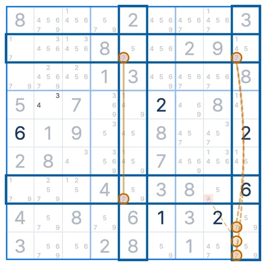

SUDOKU TECHNIQUE · Étape 4 · Poissons
Sashimi X-Wing
Le Sashimi X-Wing est une technique de sudoku : quand un X-Wing a un coin vide et des candidats (l'aileron) à côté, dans le même bloc, tu peux retirer le chiffre des cases de la colonne du coin vide qui sont dans le même bloc que l'aileron.
- Chiffres à suivre
- Un seul
- Il te faut
- Un X-Wing à coin vide + un aileron
- À retirer
- Dans le bloc de l'aileron, colonne du coin vide
Le motif Sashimi X-Wing
Le schéma ne montre que le chiffre 4. La ligne 2 n'a le 4 que dans les colonnes 3 et 7. La ligne 6 a un 4 en colonne 3, mais le coin de la colonne 7 (R6C7) est vide. À la place, R6C8 et R6C9, dans le même bloc 6, ont un 4. Ces deux cases sont l'aileron.
Pourquoi ça marche ?
Sépare les cas selon qu'une des deux cases de l'aileron est un 4 ou non.
Les cases qui ne sont pas 4 dans les deux cas sont en colonne 7 et dans le bloc 6. Donc le 4 de R4C7 est retiré. R5C7 suit la même règle, mais elle n'a pas de 4 dans ce schéma.
Comment trouver le motif Sashimi X-Wing
- Trouve une ligne à deux candidats et une ligne semblable à laquelle il manque un coin.
- Cherche les autres candidats de cette ligne (l'aileron) dans le même bloc que le coin vide.
- Retire le chiffre des cases de ce bloc dans la colonne du coin vide, sans toucher aux deux lignes.
Suis la leçon Sashimi X-Wing
Essaie une leçon de technique de Sudoku League.
Suis d'abord la leçon sur la notion de base Deux cases · liens forts ▸
Chargement
Confusions fréquentes
Quelle différence avec le Finned X-Wing ?
Le Finned X-Wing a ses quatre coins, plus un aileron. Le Sashimi X-Wing a un coin vide. La logique est la même.
Pourquoi “sashimi” ?
Ces motifs s'appellent des poissons, et celui-ci a un coin tranché, comme un sashimi.
Et si l'aileron est dans un autre bloc ?
Alors rien ne peut être retiré. L'aileron doit être dans le même bloc que le coin vide.
Techniques similaires
DANS L'APP SUDOKU LEAGUE
Tu bloques ? Un indice te montre le motif Sashimi X-Wing
Quand tu bloques, un indice dessine sur la grille le coin vide, l'aileron et la case à nettoyer. Dans Entraînement aux techniques, tu suis la leçon Sashimi X-Wing sur une vraie grille. La première grille te montre la forme et la raison. Sur la suivante, c'est à toi de la trouver.

EVENT · SUDOKU LEAGUE PREMIUM
1 MOIS OFFERT
Indices illimités · Replay · 6 packs de thèmes · Leçons de techniques
Obtenir le coupon ▸limitée